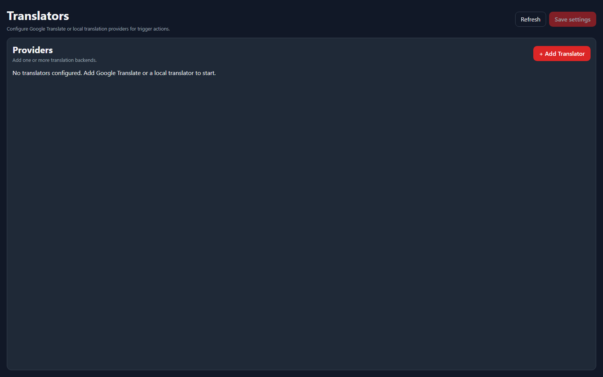

Setup Page
Translators
Translators configure the backends used by trigger actions that translate incoming text before storing or sending the result.
Providers

Add one or more translation backends, then use the Translator action inside Command Triggers. NyankoBot currently separates Google Translate API key setup, Google Cloud Translation service-account setup, and local translator endpoints.
ProviderUse it for
Google Translate API KeySimple Google v2 translation using an API key.Google Cloud TranslationGoogle v3 translation using service-account JSON and project information.Local TranslatorA local or self-hosted translation service that exposes compatible translate/language endpoints.Trigger Actions
The Translator action can read text from a trigger token, choose a source-language mode, translate to a target language, and store the result as a trigger argument or persistent variable.
OptionWhat it controls
DefaultUses the provider's configured source language.Auto GoogleLets Google detect the source language when the selected Google provider supports it.Auto NyankoBotUses NyankoBot's local language detector before translating.SpecificRequires a selected source language and can skip or fail when the detected language is not compatible.Store resultWrites translated text and metadata into the configured argument name, optionally as a persistent value.